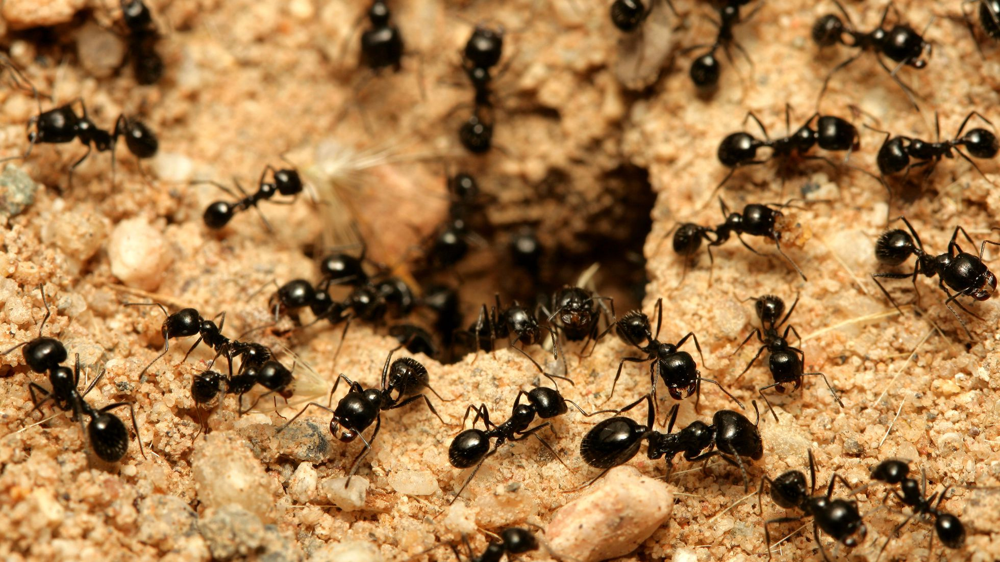

Hormigas negras
Las hormigas (Formicidae) son una familia de insectos eusociales que, como las avispas y las abejas, pertenecen al orden de los himenópteros. Las hormigas evolucionaron de antepasados similares a una avispa a mediados del Cretáceo, hace entre ciento diez y ciento treinta millones de años, diversificándose tras la expansión de las plantas con flor por el mundo. Son uno de los grupos zoológicos de mayor éxito, con unas catorce mil especies descritas, aunque se estima que pueden ser más de veintidós mil. Se identifican fácilmente por sus antenas en ángulo y su estructura en tres secciones con una estrecha cintura. La rama de la entomología que las estudia se denomina mirmecología.
| Alimentación | Comen lo que nosotros y otros insectos |
| Hábitad | Bosques, prados y montañas |
| Tamaño | 1,5 - 2 milímetros |